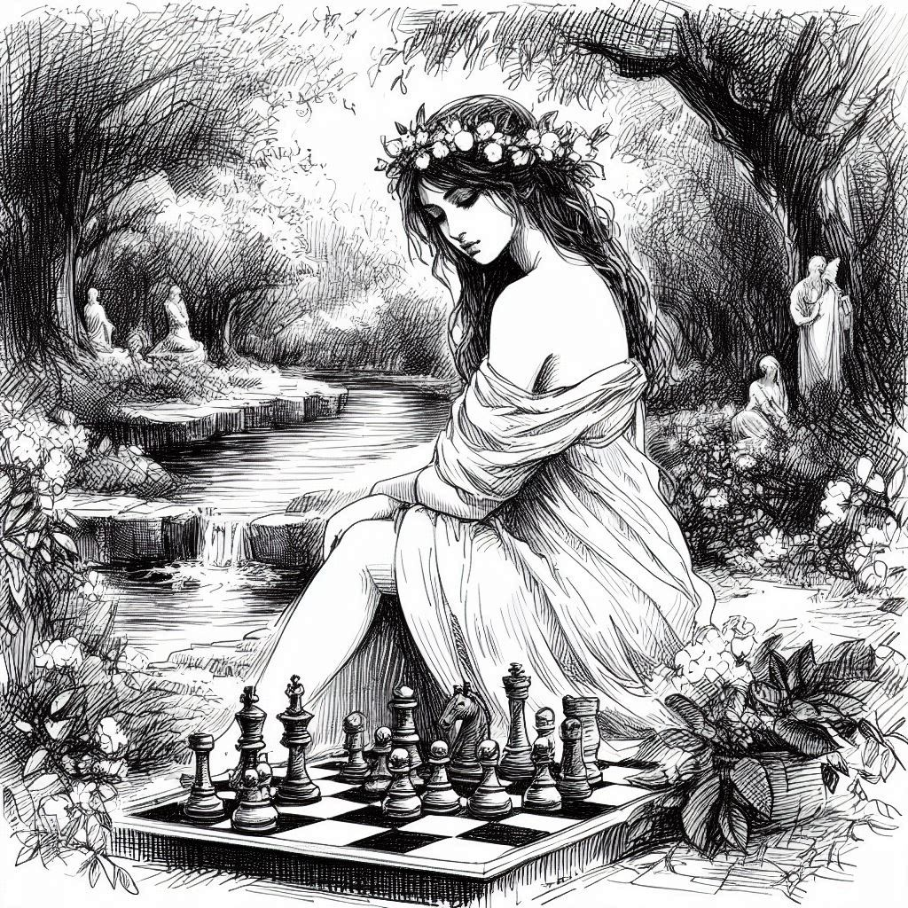

チェスのルール
チェス、別名ゲームの王は、戦略ボードゲームです。
目標
チェスの目標は、相手の王をチェックメイトにすることです。つまり、敵の王を捕捉できない位置に置くことを意味します。
ゲームのセットアップ
- チェス盤は、交互に明るいマスと暗いマスが配置された8×8のグリッドです。
- 各プレーヤーは、王1、クイーン1、ルーク2、ナイト2、ビショップ2、ポーン8の合計16個の駒でゲームを開始します。
- 駒は特定の配置で盤上に配置されます：各プレーヤーに最も近い2つの列には、駒が配置され、前列にはポーン、その後ろに他の駒が配置されます。
- 盤は、各プレーヤーの右下のマスが明るいマスになるように配置されます。
駒の移動
-
各タイプの駒は、特定の方法で移動します：
- 王はどの方向にも1マス移動できます。
- クイーンは、水平、垂直、または対角線上の任意の数のマスに移動できます。
- ルークは、水平または垂直の任意の数のマスに移動できます。
- ナイトはL字型に移動します：1方向（水平または垂直）に2マス、それから直角方向に1マス。
- ビショップは、対角線上の任意の数のマスに移動できます。
- ポーンは前方に1マス進むことができますが、最初の移動時には2マス前進するオプションがあります。ポーンは前方の斜め1マスで駒を取ります。
- 駒は他の駒を通過することはできませんが、ナイトは他の駒を飛び越えることができます。
- 駒が相手の駒が置かれたマスに移動すると、その駒がキャプチャされて盤から取り除かれます。
特殊な動き
- キャスリング
- キャスリングに使用される王または飛車が以前に動いていない場合、かつその間に駒がない場合、王は飛車に向かって2マス移動し、飛車は王を飛び越えて隣のマスに移動します。これは王を保護し、飛車を活性化するための特別な動きです。
- アンパスアン
- ポーンが初期位置から2マス前進して隣の敵のポーンの横に着地した場合、相手はそれを1マス前進した場合と同様に捕獲できます。これはポーンが2マス前進した直後に行われなければなりません。そうでないと、機会は失われます。
- ポーンの昇格
- ポーンが盤の反対側に到達すると、他の任意の駒（キングを除く）に昇格することができます。
チェックとチェックメイト
- プレイヤーのキングが捕獲される危険にさらされている場合（まだ捕獲されていない場合）、それはチェックと呼ばれます。プレイヤーは捕獲の脅威を取り除くために動かさなければなりません。
- プレイヤーのキングがチェックされており、脅威を取り除くための合法的な動きがない場合、それはチェックメイトであり、ゲームは終了します。キングがチェックメイトされたプレイヤーがゲームに負けます。
持ち駒と引き分け
- 持ち駒は、手番のプレイヤーが合法的な動きを持たず、そのプレイヤーのキングがチェックされていない場合に発生します。この場合、ゲームは引き分け（タイ）となります。プレイヤーはチェックメイトされていませんが、合法的な動きがありません。
- 持ち駒による引き分け：どちらのプレイヤーもチェックメイトを強制するのに十分な駒を持っていない場合（例：キング対キング、キングとビショップ対キング）、ゲームは引き分けとなります。
- 三回の同一局面による引き分け：同じプレイヤーが同じ局面で同じ可能な動きを3回繰り返すと、ゲームは引き分けとなります。
ゲームの終了
- ゲームはチェックメイト、持ち駒、またはプレイヤー間の合意、材料不足、または三回の繰り返しによる引き分けによって終了することがあります。
- プレイヤーが合法的な動きをすることができない場合（一般的に「行き詰まり」と呼ばれることがあります）、ゲームは終了します。
芸術と文学
チェスは芸術と文学と密接に関連する豊かな歴史を持っています。 2つの注目すべき作品があります：
Scacchi ludus
（1527年）by Marco Girolamo Vida- この詩は、オリンポス山での神々のチェスゲームを描いています。その美しさは読者の注目を集め、後の作品、Jan Kochanowskiの詩「チェス」などに影響を与えました。
Caïssa: or The Game of Chess
（1772年）by William Jones- この詩は、チェスの精神を表す神話的なキャラクターであるCaïssaを紹介しました。
これらの作品はチェス文化に持続的な影響を与えました。 文学、ゲームの解析、そして芸術でも参照されています。Scacchi ludusとCaïssaは、チェスの文化遺産の重要な側面として残っています。
